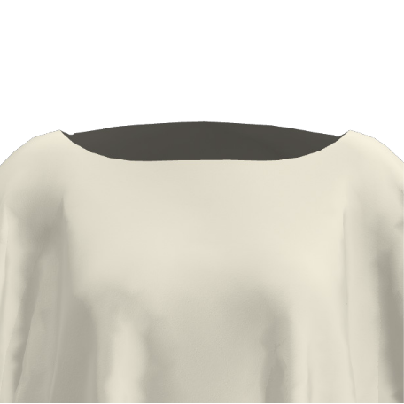
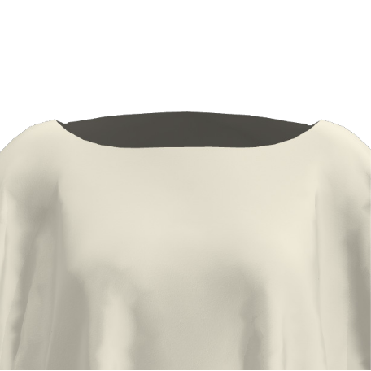
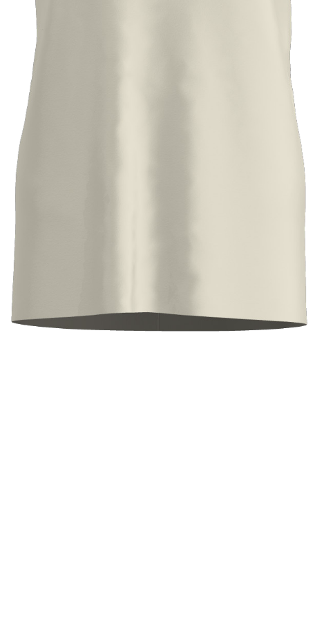
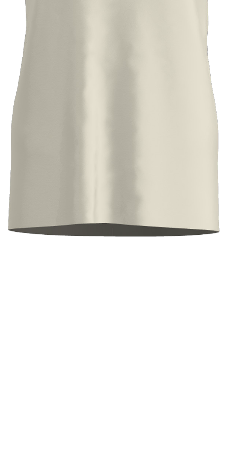
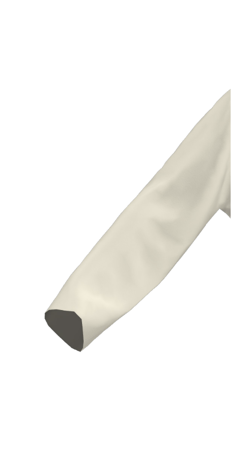
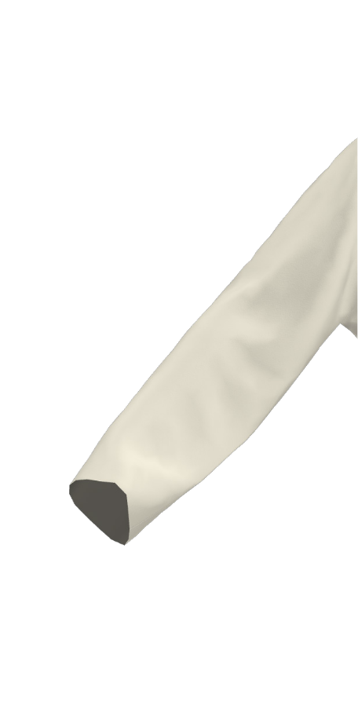

Cropped Tshirt
The Cropped Tshirt is derived from a danish bronze age pattern.
Considerations
The width of the cloth is approximately the circumference of the garment around the body. If you want a more voluminous form or are a larger size go for a wider cloth, likewise with you want a more fitted silhouette.
Recommendations
The drape or stiffness of the cloth will alter dramatically the final look of the garment. For a fluid drapey look, go for a chiffon, crepe de chine, or other soft fabric, for something more architectural choose a stiffer fabric or even something padded!
The Cropped Tshirt in the photo has been screen printed and its form modified using the elbow and body rotations. It uses the round neck, has has all edges pre-finished using acrylic house paint to arrest fraying and has been constructed using an insertion stitch for all joins. It uses 80cm of 112cm wide silk crepe de chine. The model is a NZ size 10.Making the Cropped Tshirt
There are three methods of using the Make/Use system - Pattern, Print or Template:

Pattern
Simple line diagram to print onto paper at full scale – the closest to using a traditional dressmaking pattern. Good if you have fabric at the exact width or know how to use software to change the pattern to fit. Available as ai file (Adobe illustrator/Inkscape for modifications), or pdf. Print tiled and stick together, or take to a large format printer.

Screen printing or digital printing files to put the patterns directly onto fabric. Good if you want a printed garment, some of the guide for making the garments are embedded in the print file to enable an easier understanding of the making process. Can be expensive.
Template
Lasercut templates printed onto rigid paper or card that allow a maker to draw required patterns onto fabric. This is a modular system that enables a Make/Use garment to be made from any width fabric. Low cost if using printed method, great for students of all ages and home sewers.
Making the Cropped Tshirt from a Pattern
You will need: 80cm long of ~135cm wide cloth, a pattern printed at 100%
You can print the file as it is from the pdf. Set your printer to 'tile', and print at 100%. Tape your pieces together and you have a full scale pattern. You can also open and modify the pattern in Illustrator, Inkscape or any similar vector based program to fit the width of fabric you want to use. If you do that, be careful to not select the neckline before stretching/shrinking it to fit the new width.
This pattern can be made from any width cloth. Just remember that the width of the cloth determines the circumference of the garment - assuming you don’t make any additional modifications to the design such as pleats/gathers etc, and also determines the span from sleeve hem to sleeve hem. Find a fabric you like the look and feel of. Make sure it is something you can sew based on your abilities and equipment, and away you go!

Making the Cropped Tshirt from a Print
You will need: 80cm long of ~112cm wide cloth. Access to print facilities (either screen printing or digital printing)
The attached file was designed for screen printing as fits on a standard size 'repeat'
screen. You could also send the file to a digital printer but the file isn't designed
to take full advantage of all the cool stuff digital printing can achieve. Up to you.
If you like you could modify the print to suit a different width fabric in Photoshop.
Or take it as a starting point to have a play with other possible prints inspired by the
beautiful work done for this project by Greta Menzies. Enjoy!

Making the Cropped Tshirt using Templates
You will need a fabric of your choice, approximately 80cm long. A4/A3 printer or Lasercutter, Paper or card.
Each Make/Use garment made in this method is unique to both the fabric and the user. The length of a Make/Use cropped Tshirt can be altered to suit an individual's height or taste; a favourite fabric can be used to make the Cropped Tshirt and drastically alter its appearance; new iterations can be created by combining templates in ways dreamt up by the maker/user. The possibilities are literally endless.
The Cropped Tshirt can be modified in a number of ways to suit your preferences. Click on the
sleeve and body tiles to cycle through the various styles. Your selections will be used to
display garment sizing and to determine the fabric size requirements.
The pattern templates required for your chosen garment will also be displayed. Hover over
pattern pieces to enlarge. To download and print the original full-sized templates, please
click on the link provided.

 



 



 



| 110cm | 50cm | 50cm |
| 110cm wide x 75cm long | ||
| Or enter custom values to calculate your fabric needs. | ||
|---|---|---|
Please enter a positive number value in 'cm' to determine your fabric size requirements